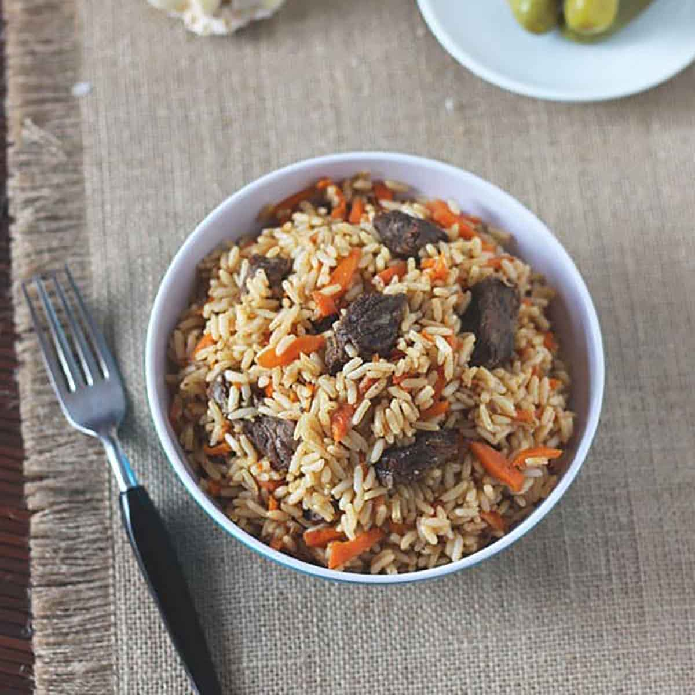
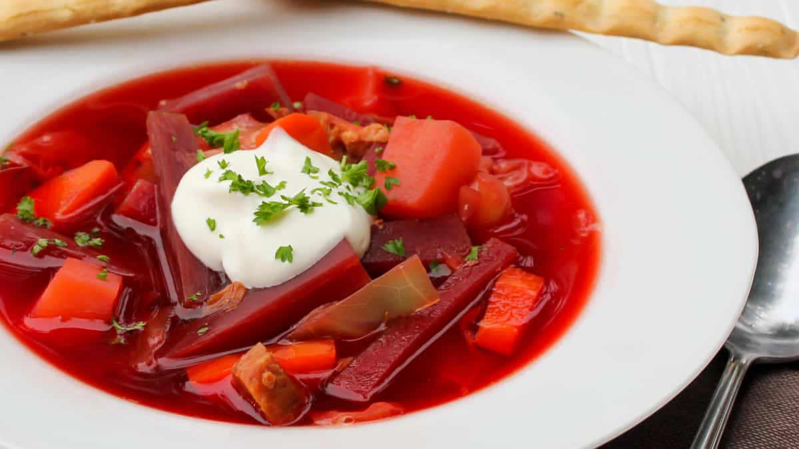
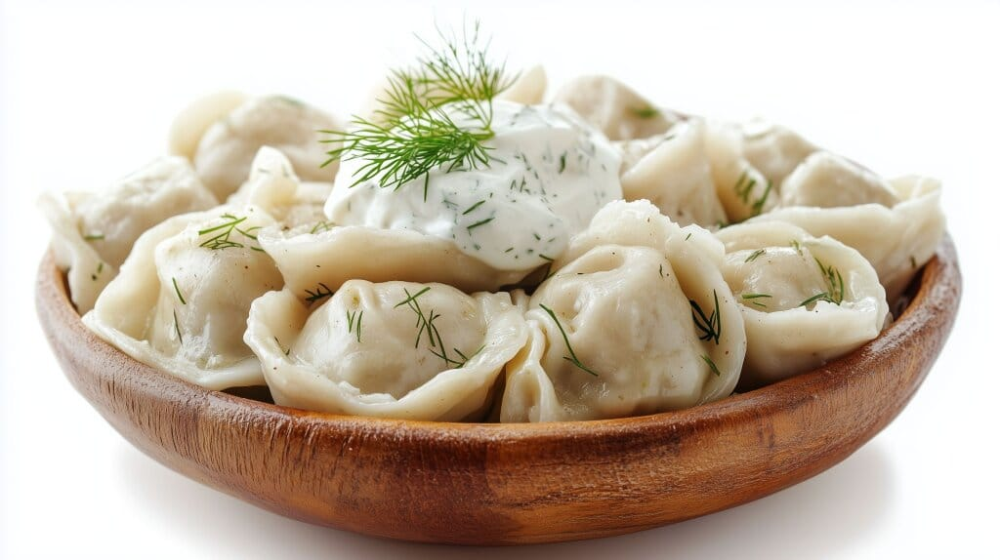
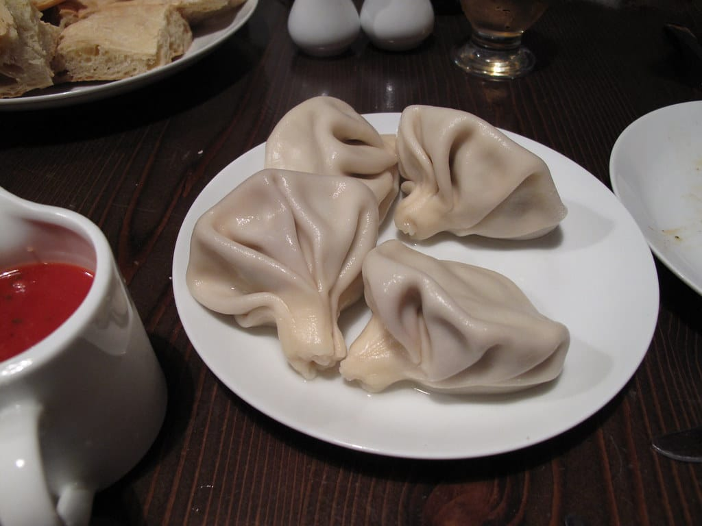
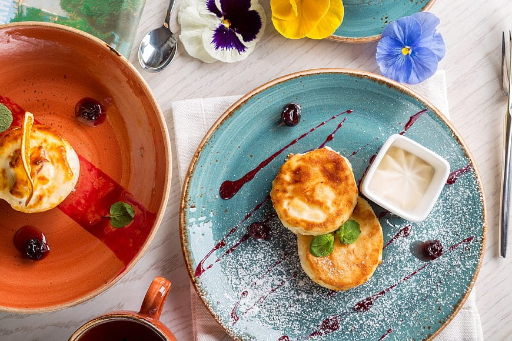
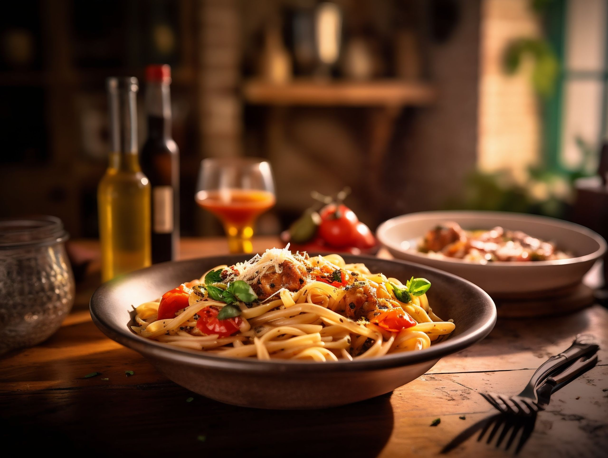
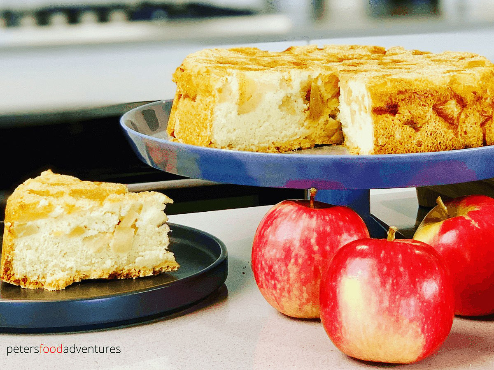

Готовят соседи.
Едят соседи.
Дизайн-проект мобильного приложения, где обычный человек превращает домашнюю кухню в источник дохода — без ресторана, аренды и лишних барьеров. Тёплая, человечная альтернатива каталогам доставки еды.

Это не доставка из ресторанов. Это Avito/Airbnb-логика, применённая к еде.
Любой человек может зарегистрироваться как «повар», выложить блюдо, назначить цену и количество порций — и продать соседям. Покупатель платит незнакомому человеку за еду без ресторанной проверки, поэтому доверие — это не фича, а фундамент всего визуального языка продукта.






Что внутри дизайн-проекта
Покупатель и повар: разные задачи, единый нативный язык
Ищет еду рядом, доверяет и заказывает
- Лента и карта с радиусом доставки как главный фильтр
- Профиль повара как «личность», не «точка продаж»
- Детализированный рейтинг: вкус, фото-соответствие, упаковка, время
- Живая доступность: «осталось 3 порции», «готово к 14:00»
- Тёмная тема, крупная типографика
Ведёт мини-бизнес без бизнес-жаргона
- Добавление блюда в 3 крупных шага, без CRM-перегруза
- Заказы на карточках с крупными кнопками «принять / готово»
- Расписание доступности — простые переключатели, не календарь-таблица
- Понятная, «человечная» верификация вместо формальной бюрократии
- Переключение в режим покупателя — одним тапом, без выхода из аккаунта
Пять принципов, которые определяют каждое решение
Доверие важнее конверсии
Каждый экран отвечает на вопрос «кому я плачу и почему я могу ему верить» раньше, чем «что я покупаю».
Гиперлокальность — не второстепенный фильтр
Расстояние и время — на первом экране, крупно, а не спрятаны в настройках.
Еда — живая, не витрина
Ограниченные порции и время готовности визуализированы честно и без давления «успей купить».
Тепло, а не корпоративность
Тёплая палитра, рукописная теплота в деталях — ближе к Etsy, чем к Amazon еды.
Простота для нетехнического повара
Крупные тапы, минимум шагов, человеческий язык вместо терминов «SKU» и «конверсия».
Доступность по умолчанию
Контраст, крупные шрифты, поддержка тёмной темы — учитываем аудиторию поваров старшего возраста.
Готово к передаче разработчикам
Все экраны собраны в интерактивном прототипе с кликабельными переходами, реальным UGC-контентом и обоснованием каждого решения по доверию.